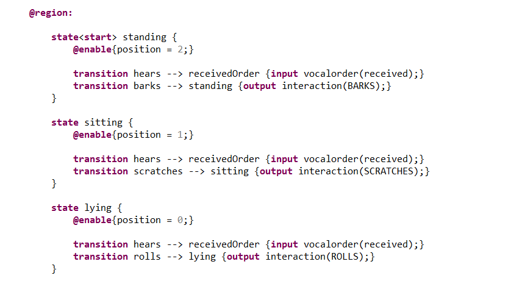
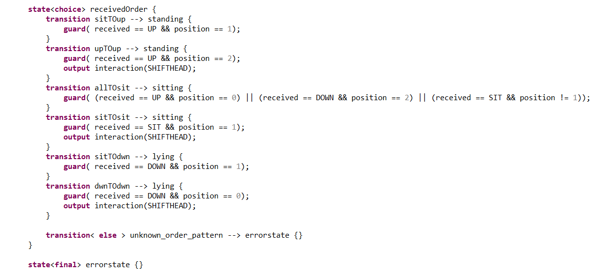
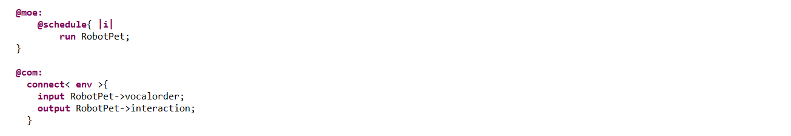
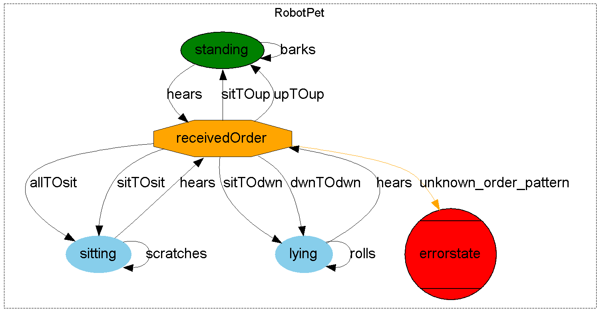

We will try to add more depth and personality to our Simple Robot Pet.
The robot will also be able to sit.
The robot will be able to execute an additional order ("SIT") and the way the orders are executed will change :
The robot will also be able to execute some animations :
If given an order that makes not sense in the current situation (for instance "SIT" when already sitting), the robot will have a certain animation ("SHIFTHEAD").
Following the same steps than for the Simple Robot Pet, we define the statemachine :
We then define the "standing", "sitting" and "lying" states. Additional transitions integrate the idle animations of the dog (guards can be further implemented (for instance time span between animations ...)).
Like before, we define the "receivedOrder" state with the flag "choice". We notice that with the additional states and orders, the different transitions and guards are much more complex than for the Simple Robot Pet. This inevitable combinatorial explosion can be controlled by Diversity which can point out modeling errors, unintended uses and not covered cases.
Finally, we program the simulation by running the machine RobotPet. And we connect its input ports to the environment that will simulate a panel of possible input.
We can generate a graph of the statemachine as follows :
We will then look for possible paths that would lead to the error state.